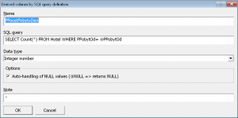

Začínáme
Systém LISp-Miner a proces DZD
Analytické procedury
Pokročilé funkce
Výzkum a vývoj
Začínáme
Systém LISp-Miner a proces DZD
Analytické procedury
Pokročilé funkce
Výzkum a vývoj
Za odvozené hodnoty je možné považovat i různé agregované údaje. Ty můžeme vypočítat jak ze samotné databázové tabulky, nad kterou provádíme analýzu, tak i z dalších (nějakým způsobem provázaných) databázových tabulek.
Příklad první agregované hodnoty může být pro každého hosta výpočet počtu dalších hostů, kteří ve stejný den přijeli ze stejného města. Příkladem druhého způsobu výpočtu může být zjištění vzdálenosti k nejbližší policejní stanici pro každý ze spáchaný zločinů na základě souřadnic místa zločinu v hlavní tabulce a souřadnic policejních stanic v tabulce druhé.
Tento typ odvozeného sloupce použijeme zejména v případě, kdy do výpočtu odvozené hodnoty vstupují hodnoty i z jiných řádků, než je ten, pro který právě odvozenou hodnotu počítáme.
Odvozený sloupec vypočtený SQL dotazem přidáme tlačítkem Add query.
 Nejprve je třeba zadat výstižný název nově přidávaného sloupce – ten musí být unikátní v rámci databázové tabulky. Následně zadáváme úplný SQL dotaz. Konečně je třeba zvolit vhodný datový typ.
Volitelně můžeme zvolit způsob zacházení s NULL hodnotami v použitých parametrech.
Po stisku tlačítka Ok se objeví záložka s detaily o databázovém sloupci. Oproti sloupcům existujících přímo v databázi obsahuje tato i zadaný SQL dotaz, kterým jsou hodnoty v odvozeném sloupci vypočteny. Dotaz je možné upravovat po stisku tlačítka Edit. Funkčnost záložky i další zacházení s odvozenými sloupci je však zcela shodné jako v případě původních databázových sloupců.
V seznamu sloupců databázové tabulky bude odvozený sloupec označen typem Query.
Při zápisu vnořeného SQL dotazu musíme dodržovat syntaxi jazyka SQL a příkazu SELECT podle použitého databázového prostředí, ve kterém jsou uložena analyzovaná data. Dojde-li při výpočtu odvozené hodnoty k chybě (chybná syntaxe dotazu apod.), bude sloupec označen jako nevalidní.
Zadaný dotaz musí mít formát příkazu SELECT v podobě „SELECT hodnota FROM tabulka WHERE podmínka“ (volitelně i s klauzulí ORDER BY) a vracet právě jeden sloupec, z nějž se pro výpočet odvozené hodnoty použije vždy pouze první hodnota.
Při zápisu dotazu je možné používat parametry, které budou následně automaticky nahrazeny správnou hodnotou. Parametry musí být uvozeny znakem '@' a musí odpovídat názvům již existujících databázových sloupců v databázové tabulce, do které odvozený sloupec přidáváme.
Příkladem je SQL dotaz:
který pro každý pobyt do odvozeného sloupce vypočte počet hostů ze stejného města.
Vnořený SQL dotaz je vyhodnocován postupně pro všechny řádky databázové tabulky analyzovaných dat a za parametry jsou dosazeny aktuální hodnoty v daných sloupcích. Pokud je na prvním řádku databázové tabulky ve sloupci HMesto hodnota Praha, provede se SQL dotaz:
který vrátí celkový počet hostů z Prahy a vypočtená hodnota se vloží do prvního řádku právě počítaného odvozeného sloupce. Následně se zjistí hodnota ve sloupci HMesto pro druhý řádek a opět se provede vnořený dotaz. A tak dále pro všechny řádky databázové tabulky analyzovaných dat.
Pozor! Při konstrukci SQL dotazu nelze používat jiné, dříve vytvořené odvozené sloupce. SQL dotaz není vyhodnocován LISp-Minerem, ale prostředky databázového prostředí, ve kterém jsou uložena analyzovaná data. Proto se ve výrazu mohou objevit pouze sloupce, které existují v databázové tabulce.
Vhodný datový typ je třeba zvolit s ohledem na výsledek SQL dotazu, ze kterého je odvozená hodnota přebírána.
Obsahuje-li některý z parametrů pro daný řádek hodnotu NULL, může nastat problém při vyhodnocování vnořeného SQL dotazu, je-li tento parametr použit v matematickém výrazu.
Proto je přednastavena volba Auto-handling of NULL values, která způsobí, že při výskytu NULL hodnoty v libovolném parametru bude i výsledná hodnota v odvozeném sloupci také NULL, aniž by se SQL dotaz vykonával. To zabrání chybě při provádění SQL dotazu, který výskyt NULL hodnot neošetřuje.
Chceme-li dotaz vykonávat i při výskytu NULL hodnot (a sami si je ošetřit), zrušíme volbu automatického zacházení s NULL hodnotami.
Příklady výpočtu odvozených hodnot pomocí SQL dotazu jsou:
| Hodnota | SQL dotaz | Datový typ |
|---|---|---|
| Celkový počet hostů ze stejného státu | SELECT Count(*) FROM Hotel WHERE HStat= @HStat | celé číslo |
| Počet hostů s příjezdem ve stejný den | SELECT Count(*) FROM Hotel WHERE PPobytOd= @PPobytOd | celé číslo |
| Počet hostů s příjezdem ve stejný den (pro případ, že by PPobytOd mohl obsahovat i čas příjezdu) | SELECT Count(*) FROM Hotel WHERE Int(PPobytOd)= Int(@PPobytOd) | celé číslo |
| Počet hostů ze stejného města a s příjezdem ve stejný den | SELECT Count(*) FROM Hotel WHERE (HMesto= @HMesto) AND (PPobytOd= @PPobytOd) | celé číslo |
| Průměrná cena placená hosty ze stejného státu | SELECT Avg(PCenaCelkem) FROM Hotel WHERE HStat= @HStat | desetinné číslo |
| Nejvyšší dílčí hodnocení ubytování od hostů přibližně stejného věku | SELECT Max(DUbytovani) FROM Hotel WHERE HVek BETWEEN (@HVek- 5) AND (@HVek+ 5) | desetinné číslo |
| Vzdálenost k nejbližší policejní stanici | SELECT Min(Sqr((@CLongitude-PoliceStations.LocationX)^2+(@CLatitude-PoliceStations.LocationY)^2)) FROM PoliceStations | desetinné číslo |
Související témata:
 Odvozené hodnoty
Odvozené hodnoty
 Záložka s detaily o tabulce
Záložka s detaily o tabulce
 Zobrazení hodnot v tabulce
Zobrazení hodnot v tabulce
 Praktická ukázka: Demo Hotel: Výpočet odvozených hodnot
Praktická ukázka: Demo Hotel: Výpočet odvozených hodnot

{kind=link}